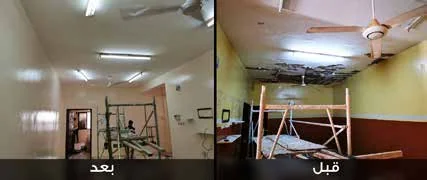
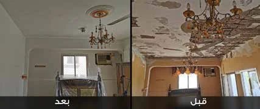
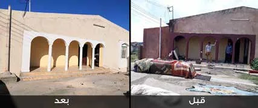
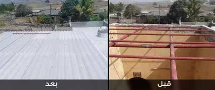
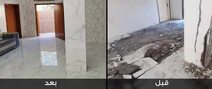
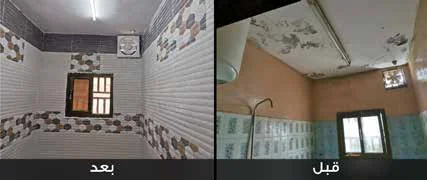

حملة بناء وترميم منازل الأيتام
بيتٌ آمن لأسرة يتيم يبدأ بمساهمتك
تحرص جمعية بهجة العمانية للأيتام على توفير مسكن آمن وسليم، لذا تقوم بصيانة وترميم منازل الأيتام المتضررة.
المصدر: الملف التعريفي للجمعية
يتم التبرع عبر الموقع الرسمي للجمعية bahjah.org.om، والدفع ببطاقات الائتمان والخصم عبر بوابة بنك مسقط SmartPay.

لماذا نرمم منازل الأيتام؟
بدأت الجمعية أعمال الصيانة والترميم بعد الحالة المدارية (إعصار مكونو) عام 2018؛ إذ قام فريق مختص من الجمعية بزيارة المنازل وتسجيل الحالات وتقييم كميات الصيانة والترميم، ثم بدأ التنفيذ.
وتستمر أعمال الصيانة والترميم طوال السنة، وتزداد وتيرتها عند تأثر السلطنة بالأنواء المناخية.
ترميم منازل الأيتام والأرامل ليس مجرد إصلاح لـ"خرسانة"، بل هو أمان لقلوبهم.
من إعلان الجمعية لحملة ترميم 10 منازل أرامل وأيتام – مارس 2026
المصدر: الملف التعريفي لجمعية بهجة (أعمال الصيانة والترميم) وإعلان الحملة الرسمي
ماذا يدعم تبرعك؟
يُوجَّه التبرع عبر باب «بناء وترميم» الرسمي، الذي تصفه الجمعية بـ: «ساهم معنا بترميم وبناء منازل الأيتام».
-
إصلاح الأسقف المتهالكة
-
ترميم الجدران المتصدعة
-
تجهيز المرافق الأساسية
كالمطابخ والحمامات وغيرها.
-
بناء منازل الأيتام
«ساهم معنا بترميم وبناء منازل الأيتام».
البنود من إعلان الجمعية لحملة الترميم (مارس 2026) ووصف باب «بناء وترميم» في موقعها.
يحدد فريق الجمعية الأعمال المطلوبة لكل منزل بعد الزيارة والتقييم، كما هو موثق في منهجية الجمعية لأعمال الصيانة والترميم.
لماذا جمعية بهجة؟
تُصنَّف جمعية بهجة العمانية للأيتام كجمعية خيرية غير حكومية للأيتام. تأسست بتاريخ 10 / 2 / 2014 وفقًا للمرسوم السلطاني رقم 14 / 2000.
رؤيتنا
تقديم الرعاية والمساعدات للأيتام داخل وخارج منازلهم. هدفنا أن نعطيهم الأمل لمستقبل آمن وفرص أفضل، لجعل كل طفل تحت رعايتنا ينمو نموًا سليمًا نفسيًا واجتماعيًا بشكل متكامل داخل المجتمع.
من أهدافنا
ضمان وصول كافة أنواع الرعاية والدعم لجميع الأيتام، وتشمل دعمًا ماليًا شهريًا بالإضافة للدعم المعنوي والصحي والتعليمي والاجتماعي.
شهادات وجوائز حصلت عليها الجمعية
- شهادة الأيزو2023م
-
 جائزة السلطان قابوس للعمل التطوعي2013م
جائزة السلطان قابوس للعمل التطوعي2013م
-
 جائزة السنابل للتميز الخدمي بدول مجلس التعاون الخليجي2016م
جائزة السنابل للتميز الخدمي بدول مجلس التعاون الخليجي2016م
-
 كُرّمت كأفضل جمعية من لجنة حقوق الإنسان2019م
كُرّمت كأفضل جمعية من لجنة حقوق الإنسان2019م
-
 المركز الأول على مستوى السلطنة في مستوى أوكيو2020م
المركز الأول على مستوى السلطنة في مستوى أوكيو2020م
-
 جائزة المؤسسة الدولية المتميزة في الابتكار الاجتماعي بمملكة البحرين2023م
جائزة المؤسسة الدولية المتميزة في الابتكار الاجتماعي بمملكة البحرين2023م
-
 جائزة خالد العيسى الصالح بالكويت على مستوى الوطن العربي2024م
جائزة خالد العيسى الصالح بالكويت على مستوى الوطن العربي2024م
كما وردت في موقع الجمعية الرسمي.
من أعمال الجمعية الموثقة
قبل وبعد: أعمال الصيانة والترميم
اسحب لمشاهدة المزيد ←





الصور من الملف التعريفي الرسمي للجمعية (قسم الصيانة والترميم) · عرض الملف
-

مارس 2026
حملة ترميم 10 منازل أرامل وأيتام
أطلقت الجمعية خلال شهر رمضان (مارس 2026) حملة لترميم عشرة منازل لأسر الأيتام والأرامل، تشمل إصلاح الأسقف المتهالكة وترميم الجدران المتصدعة وتجهيز المرافق الأساسية كالمطابخ والحمامات.
حملة مؤرخة؛ للاستفسار عن حالتها تواصل مع الجمعية.
المصدر على موقع الجمعية -
منذ 2018
ترميم وصيانة المنازل
بعد إعصار مكونو، زار فريق الجمعية المنازل وسجّل الحالات وقيّم أعمال الصيانة ثم نفّذها. كما نفّذت الجمعية توصية معالي وزير التنمية الاجتماعية بصيانة 5 منازل في ولاية مرباط.
-

من مشاريع الجمعية
مجمع بهجة السكني
مجمع سكني تجاري يوفر سكنًا للأيتام، ويتكوّن من أربعة مبانٍ وبه حديقة ومساحات خارجية.
المصدر على موقع الجمعية -

هدف 2040
إدارة المباني الخيرية
تهدف الجمعية إلى إنجاز 10 مبانٍ خيرية بحلول عام 2040 لضمان دخل مستدام، وقد أنجزت المبنى الأول بحمد الله.
المصدر على موقع الجمعية
كم أتبرع؟
«ساهم ولو بريال»، كما جاء في إعلان الجمعية لحملة الترميم.
1,000 ر.ع.ريال عماني واحد
تعرض صفحة الدفع الرسمية الريال بثلاث خانات عشرية (1,000 بيسة). اكتب مبلغ تبرعك بالريال في خانة «الكمية».
اكتب المبلغ لتعرف ماذا تُدخل في خانة الكمية.
المصدر: صفحة «بناء وترميم» في موقع الجمعية وإعلان حملة الترميم.
- اضغط «ساهم الآن في ترميم منازل الأيتام».
- في صفحة «بناء وترميم» الرسمية، اكتب الكمية ثم اضغط «تبرع الآن».
- أكمل الدفع بالبطاقة عبر بوابة بنك مسقط SmartPay.
يتم التبرع عبر الموقع الرسمي للجمعية bahjah.org.om، والدفع ببطاقات الائتمان والخصم عبر بوابة بنك مسقط SmartPay.
طرق أخرى للتبرع
التحويل البنكي
- بنك مسقط 0397000008880035
- بنك ظفار 01041328888001
الحسابات باسم: جمعية بهجة العمانية للأيتام
للتأكد من تخصيص التحويل البنكي لباب الترميم، تواصل مع الجمعية بعد التحويل.
رسالة نصية
أرسل كلمة «تبرع» إلى الرقم المجاني 90021 للتبرع بـريال واحد للأيتام (عمانتل وأوريدو).
إرسال الرسالةالمصدر: إعلان الجمعية الرسمي لحملة الترميم (مارس 2026).
الأسئلة الشائعة
أين يذهب تبرعي؟
يذهب تبرعك مباشرة إلى جمعية بهجة العمانية للأيتام عبر صفحة «بناء وترميم» على موقعها الرسمي، وتصفها الجمعية بـ: «ساهم معنا بترميم وبناء منازل الأيتام».
ماذا تدعم هذه الحملة تحديدًا؟
صيانة وترميم وبناء منازل أسر الأيتام، ومن ذلك إصلاح الأسقف المتهالكة، وترميم الجدران المتصدعة، وتجهيز المرافق الأساسية كالمطابخ والحمامات. ويحدد فريق الجمعية الأعمال المطلوبة بعد زيارة كل حالة وتقييمها.
هل ما زالت حملة «ترميم 10 منازل» مفتوحة؟
أُعلنت تلك الحملة في مارس 2026. هذه الصفحة تستقبل التبرعات لباب «بناء وترميم» الدائم لدى الجمعية. للاستفسار عن حالة حملة بعينها، تواصل مع الجمعية مباشرة.
كيف أتبرع؟
اضغط زر «ساهم الآن»، فتنتقل إلى صفحة «بناء وترميم» على موقع الجمعية الرسمي. تظهر هناك قيمة الوحدة «1,000 ر.ع.» وتعني ريالًا عمانيًا واحدًا، فاكتب مبلغ تبرعك بالريال في خانة الكمية (مثلًا: 20 = عشرون ريالًا)، ثم اضغط «تبرع الآن» وأكمل الدفع.
ما طرق الدفع المتاحة؟
بحسب صفحة الأسئلة الشائعة في موقع الجمعية: «نقبل بطاقات الائتمان والخصم عبر بوابة بنك مسقط SmartPay».
هل توجد طريقة أخرى للمساهمة؟
نعم. يمكنك التحويل إلى حسابات الجمعية البنكية، أو إرسال كلمة «تبرع» إلى الرقم المجاني 90021 للتبرع بريال (عمانتل وأوريدو)، أو التبرع عبر تطبيق بهجة. التفاصيل في قسم «طرق أخرى للتبرع» أدناه.
كيف أتواصل مع جمعية بهجة؟
هاتف: 92877577 – 23289966 · واتساب: 92877577 · البريد: bahjah1.omani@gmail.com · العنوان: ظفار – صلالة الشرقية – شارع 23 يوليو – بجوار بنك ظفار
ساهم في بيت آمن لأسرة يتيم
مساهمتك، مهما كانت، تذهب إلى باب «بناء وترميم» منازل الأيتام في جمعية بهجة العمانية للأيتام.
يتم التبرع عبر الموقع الرسمي للجمعية bahjah.org.om